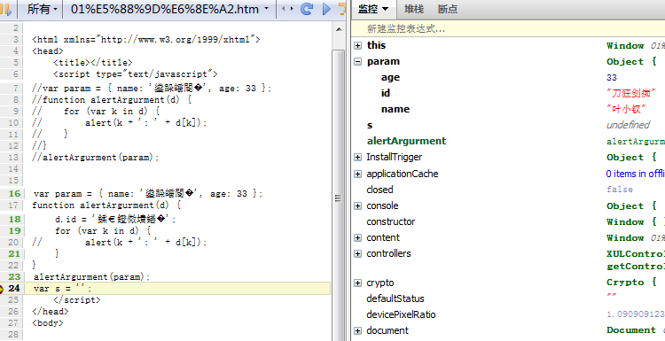

前言
我最近在思考一个问题，我本身平时还是积累了不少东西，面试时候问的东西基本逃不出写的博客（当然，高级阶段的就不行了），但是真的被问到时我却不一定答得上来。
知道且能回答，回答的效果都不是很好。。。。这是一个让人很囧的事情，另外，按道理说阿里面试是完蛋了，后面再慢慢找工作吧，休息一下也不错的。
除了记忆力意外，心态也是一个问题，比如我最常说的一句话就是：
恩，你说这个我知道，我还特意学习过，写了demo，但是给忘了！！！
哎哟，我听到这句话都可耻的笑了，你忘了和我有一毛线关系？忘了是很多原因造成的，最直接原因应该是不够深刻，所以最近我们便抛开其它杂念，由最基础的HTML+CSS+Javascript学习吧。
这次学习，希望能给各位以及自己带来不一样的感觉，由于最近要出去面试，问的最多的恐怕是javascript，所以我们先看看js了，这次学习中我把一些平时了解得似是而非的东西都给揪出来看看。
函数参数
各位看得没错，我觉得我对函数的参数理解不够彻底，各位怎么样呢，我现在出个例子来试试：
1 var param = { name: '叶小钗', age: 33 }; 2 function alertArgurment(d) { 3 for (var k in d) { 4 alert(k + ': ' + d[k]); 5 } 6 } 7 alertArgurment(param);
这个题自然没有问题，那我们变化一下呢？
1 var param = { name: '叶小钗', age: 33 }; 2 function alertArgurment(param) { 3 for (var k in param ) { 4 alert(k + ': ' + param [k]); 5 } 6 } 7 alertArgurment(param);
各位现在知道自己使用的是外面的param还是里面的param呢？若是仍然难不倒你，看看这个呢：
1 var param = { name: '叶小钗', age: 33 }; 2 function alertArgurment(d) { 3 param.id = '刀狂剑痴'; 4 for (var k in d) { 5 alert(k + ': ' + d[k]); 6 } 7 } 8 alertArgurment(param);
那么这个呢？或者说这段代码与这段代码有什么不同呢？请对比两段代码：
1 var param = { name: '叶小钗', age: 33 }; 2 function alertArgurment(d) { 3 d.id = '刀狂剑痴'; 4 for (var k in d) { 5 alert(k + ': ' + d[k]); 6 } 7 } 8 alertArgurment(param);
怎么样呢？对于参数各位还敢说知道吗，我反正有点不敢了，于是再看看各位知道下面这些家伙是干什么的吗？
① arguments
② callee
③ caller
若是你都知道并且了解十分深入的话，那么我又在自己为难自己了。。。。好了，上面的问题先留着，我们来看看什么是参数：
ECMAScript函数的参数与其它语言有所不同，其有以下特点：
① 个数不限
② 类型不限
③ 函数调用时候参数传递看心情
ECMAScript在内部是使用一个数组来表示参数的：arguments对象可访问这个数组。
但是arguments只是与数组类似，他并不是Array的实例,所以我们定义函数时候可以不显示定义参数而是使用arguments[0]的方式读取
于是函数重载什么的也只能是传说了。
callee：函数内部有两个特殊对象，一个是this一个是arguments，其中arguments有一个callee的属性，他是一个指针，指向其函数。
在ECMAScript5中规范化了另外一个函数对象属性：caller，这个属性保存着调用当前函数的引用，全局变量中对应着null
其获取方式为arguments.callee.caller（在严格模式先访问arguments.callee要报错）
我们先贴一张图出来看看：

各位看到了，我们只是将param作为参数传了进去，然后在里面给他多加了一个属性，但是param也多了一个属性哦！
--------------华丽的分割线------------------
PS：我突然想起了那天面试我错了一道非常恶心的题，突然想起的，勿喷，实在太恶心了。。。
1 var a = {}; 2 a.a = 6; 3 alert(a.a); 4 5 var b = a; 6 b.a = 66; 7 alert(a.a);
这个我还答对了，但是好像后面类似这样的题我答错了，囧：
1 var a = 3; 2 alert(a); 3 a = 4;
就是类似于这样的题了，我当时是饿了还是在大神面前智商降低了呢？我刚刚突然想起了，觉得好戳哦。。。
--------------华丽的分割线------------------
回到本题，我们来理一理这个东西，我们这里传递了一个对象作为函数的参数，与其说是对象，不如说是对象的引用。
ECMAScript所有参数传递的都是值，不能通过引用传递参数
所以内部改变了那个值也会改变外面的东东，但是传递值的话又有所不同：
1 var a = 1; 2 function alertArgurment(d) { 3 d = 2; 4 alert(d); 5 } 6 alertArgurment(a);
这块里面就是2，外面的a仍然是1了。根据前面的研究我们再修改下程序：
1 var param = { name: '叶小钗', age: 33 }; 2 function alertArgurment(d) { 3 d.id = '刀狂剑痴'; 4 arguments[0].qq = '素还真'; 5 for (var k in d) { 6 alert(k + ': ' + d[k]); 7 } 8 } 9 alertArgurment(param); 10 var s = '';
我们既然不能传递引用，那么他就直接将对象传进去了。。。
1 var param = { name: '叶小钗', age: 33 }; 2 function alertArgurment(d) { 3 var tmp = param; 4 d.id = '刀狂剑痴'; 5 arguments[0].qq = '素还真'; 6 var sss = ''; 7 } 8 alertArgurment(param);
大家请设置断点观察tmp的变化，d变化了tmp会与之同步，所以我们这里应该是把param直接给传递进去了吧：
整理
ECMAScript中所有函数的参数都是按值传递。在这点上我们容易模糊，因为引用类型传递的时候会完全的复制进去
在传递引入引用类型时，会把这个值在内存中的地址复制给一个局部变量，这个局部变量的变化会反应到外部。
就如我们上面的例子：
① 我们创建了一个对象param
② 我们将之转到函数内部后就复制给了d对象（arguments[0]）,d与param现在是同一对象，他们在堆中只有一个对象。
结语
好了，我们队参数的研究暂时到这里，若您有何疑问请提出